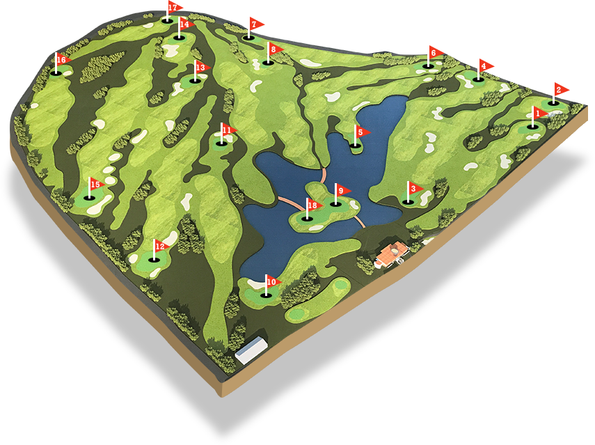
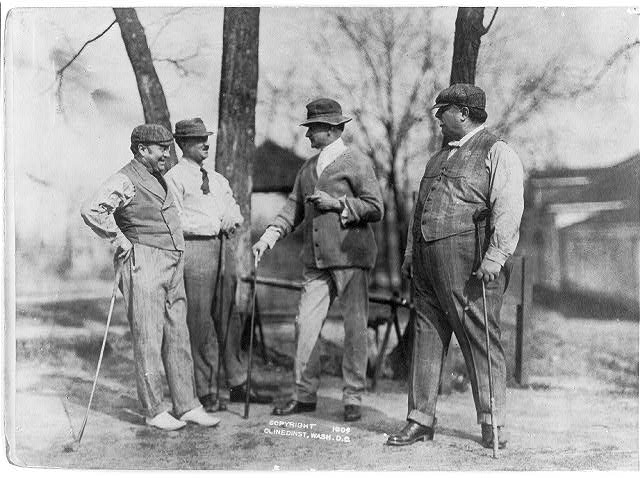

Despre Golf
Golful este un joc sportiv în aer liber, în care competitorii folosind mai multe tipuri de crose, lovesc mingile și încearcă să le introducă, pe rând, în găurile unui teren de golf, din cât mai puține lovituri.
Acest sport se poate practica de la vârstele cele mai mici până la cele mai înaintate. O rundă standard de golf implică parcurgerea pe jos a unei distanțe de circa 10–15 km, uneori mai mult.
Regulamentul acestui sport nu impune un teren de joc standardizat. Dimpotrivă, jocul se desfășoară pe trasee de golf, fiecare având o formă particulară, conform reliefului pe care este construit. Un detaliu comun este faptul că aceste trasee au în general între 9 și 18 găuri. La nivel de concurs se joacă 18 trasee/cupe
Pe terenul de golf nu se face antrenament, ci este exclusiv destinat jocului. Pentru antrenament și instructaj sunt amenajate facilități de "driving range". Acestea sunt formate din standuri și terenul de aterizare a mingilor. Dimensiunile uzuale ale traseelor/cupelor sunt 300 x 100 m și pe acesta pot exista ținte (targets). Pentru putting sunt amenajate " putting greens " cu mai multe trasee/cupe, uzual 9. Pentru jocul scurt există " chipping area " care include o zonă de " green ", zona de " fairway " și unul (sau mai multe) " bunker(s) ", nu întotdeauna umplut(e) cu nisip. Un teren de golf are amenajat și un " driving range " pentru antrenament, dar aceste "driving ranges" pot exista și în afara terenurilor de golf și sunt de obicei amplasate mai aproape de zonele urbane, exclusiv pentru antrenament.

Istoria Golfului
Un joc similar cu golful este înregistrat ca având loc la 26 februarie 1297, în Olanda, într-un oraș numit Loenen aan de Vecht – olandezii au jucat un joc cu o minge de piele si un băț.
Castigatorul a fost cel care a lovit mingea cu cel mai mic număr de lovituri intr-o tinta aflata la mai multe sute de metri distanță.
Unii cercetători susțin că acest joc de a pune o minge mică într-o gaură în pământ cu ajutorul batei de golf, a fost de asemenea jucat în secolul 17 in Țările de Jos și că acestea au precedat jocului din Scoția.
Cu toate acestea, este general acceptat faptul că jocul de golf in forma ei modernă a evoluat în Scoția în timpul Evului Mediu.Jocul nu a s-a bucurat de o popularitate internațională până în secolul al 19-lea, atunci când sa răspândit în restul Regatului Unit și apoi a Imperiului Britanic și Statele Unite ale Americii.
